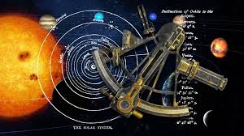
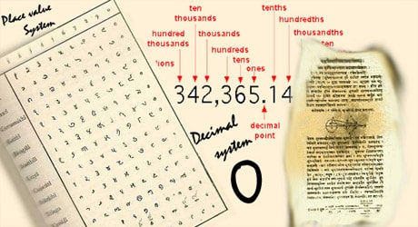
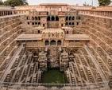

Hindu-Arabic Numerals Mathematics

Snakes & Ladders Games

Surgical Techniques Medicine

Cataract Surgery Medicine
Herbal Medicines Medicine

Cotton Textiles Textiles

Cotton Gin Textiles

Natural Dyeing Textiles

Wootz Steel Metallurgy

Iron Pillar Metallurgy

Zinc Smelting Metallurgy

Harappan Town Planning Urbanism

Flush Toilets Sanitation

Sugar Refining Food

Diamond Mining Gems

Astronomical Calculations Astronomy

Decimal System Mathematics

Chakravala Method Mathematics

Lost-wax Casting Sculpture

Fiber Optics Optics

Radio Research Physics

Vaccination Ideas Medicine

Irrigation Devices Engineering

Prefabrication Urbanism

Ancient Universities Education

Bhaskara’s Work Mathematics
Algebraic Methods Mathematics

Musical Instruments Culture

Dance Techniques Culture
.jpg)
Sanskrit Grammar Linguistics

Stepwells Architecture

Temples & Stupas Architecture

Fairs & Festivals Culture

Math Instruments Mathematics

Water Clocks Engineering

Road & Bridge Engineering Engineering
.jpg)
Sports Equipment Sports

Silk & Weaving Textiles

Proof Techniques Mathematics

Calendrical Astrology Astronomy

Scientific Texts Literature

Surgery Instruments Medicine

Metallurgical Recipes Metallurgy

Water Management Engineering